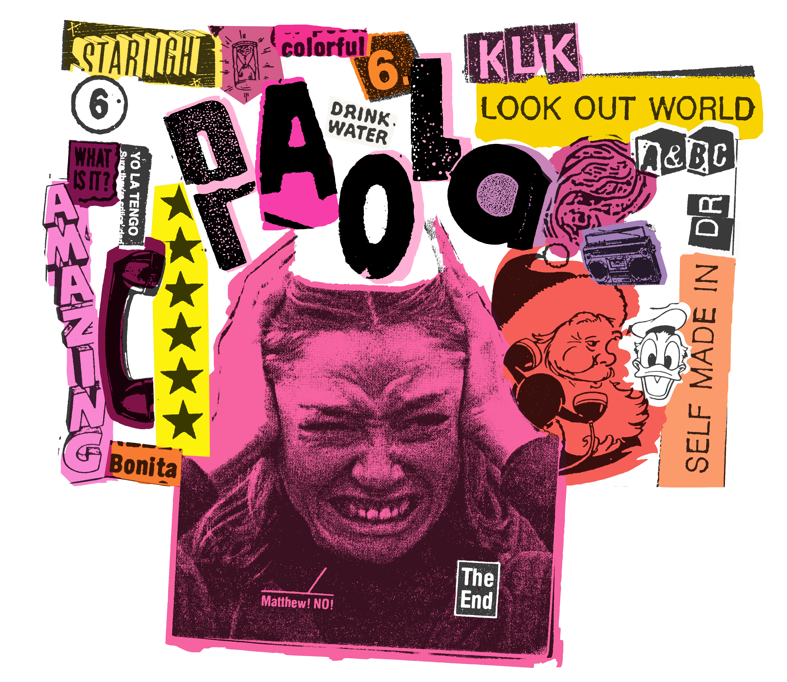

I’m Paola Garcia, a graphic design student at Western Kentucky University, I’m originally from the Dominican Republic, and I’m a bilingual, first-generation college student. I started college as a marketing major before switching to graphic design, My background in marketing helps me think about the people I’m designing for, when I work on a brand or a project, I think about who it needs to reach and what those people should know about it. That helps me choose colors, fonts, and images that make the message easy to understand and remember. During my graphic design internship, I worked on real projects for clients and learned how to use their feedback to improve my work while meeting deadlines.
I’d like to work in branding and visual identity while also, explore more and develop more skills in digital illustration, layout design and motion design.
